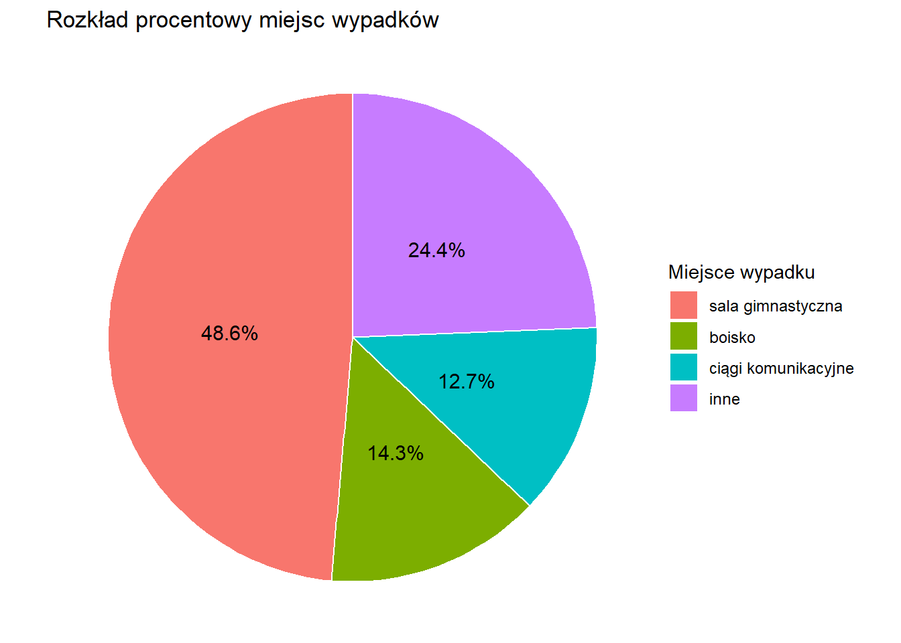

Wypadki w placówkach oświaty
Hubert Smyk, Radosław Szynal
1 FS-DI, grupa 6

Wprowadzenie do tematu
Wypadki w placówkach oświatowych to istotny problem wpływający na bezpieczeństwo uczniów. Mogą mieć one charakter przypadkowy lub wynikać z działań umyślnych, takich jak agresja czy niewłaściwe zachowanie. Analiza danych dotyczących takich zdarzeń pozwala lepiej zrozumieć ich przyczyny i lokalizację, co może pomóc w zapobieganiu podobnym sytuacjom w przyszłości. W niniejszym projekcie skupiono się m.in. na liczbie wypadków w różnych województwach oraz typów ich występowania.
Podział na województwa
Skupmy się teraz na podziale wypadków względem województw:
 Wykres 1. Podział na województwa
Wykres 1. Podział na województwa
Wnioski
Najwięcej wypadków odnotowano w województwie śląskim (4413), co może świadczyć o dużej liczbie placówek lub większej liczbie uczniów.
Na kolejnych miejscach znalazły się województwa małopolskie (2923) i mazowieckie (2590) – również silnie zurbanizowane regiony z dużą liczbą szkół.
Najmniej wypadków wystąpiło w województwie lubuskim (497), co może wynikać z mniejszej liczby uczniów lub lepszego nadzoru nad bezpieczeństwem.
Widoczna jest wyraźna dysproporcja między regionami – województwa o dużej gęstości zaludnienia i większej liczbie uczniów mają znacznie więcej zdarzeń.
Analiza wypadków w województwie Śląskim
Skoro najwięcej wypadków odnotowano w województwie śląskim, przeprowadźmy dokładniejszą analizę przyczyn tych wypadków.
| Poz. | Przyczyna | Ilość |
|---|---|---|
| 1 | nieuwaga ucznia | 2336 |
| 2 | inna przyczyna | 784 |
| 3 | działania nieumyślne ucznia | 673 |
| 4 | działania nieumyślne innej osoby | 276 |
| 5 | uderzenie nieumyślne | 221 |
| 6 | działania umyślne innej osoby | 57 |
| 7 | działania umyślne ucznia | 31 |
| 8 | pobicie, umyślne uderzenie | 22 |
| 9 | nieznajomość lub nieprzestrzeganie przepisów BHP | 3 |
| 10 | zły stan techniczny obiektów | 3 |
Tabela 1. Tabela z liczbą różnych rodzajów wypadków w województwie Śląskim
Miejsce zdarzenia
Wypadki możemy posegregować według miejsca w którym się wydarzyły, zobaczmy na wykres.
 Wykres 2. Rozkład procentowy miejsc wypadków
Wnioski
Z wykresu wynika, że najwięcej wypadków zdarza się na sali gimnastycznej – aż 48,6% wszystkich przypadków. To jasno pokazuje, że zajęcia sportowe wiążą się z największym ryzykiem. Na kolejnych miejscach są boisko (14,3%) oraz ciągi komunikacyjne, czyli korytarze i przejścia (12,7%), gdzie również dochodzi do sporej liczby zdarzeń. Natomiast kategoria „inne” (24,4%) zbiera zarówno miejsca, w których wypadki zdarzają się rzadziej, jak i sytuacje, dla których nie mamy dokładnie określonej lokalizacji. To może oznaczać np. schody, szatnie czy inne mniej uczęszczane przestrzenie. Podsumowując – największe ryzyko występuje tam, gdzie uczniowie są fizycznie aktywni, ale warto też zwrócić uwagę na pozostałe przestrzenie w szkole, które choć mniej oczywiste, również mogą być niebezpieczne.
Źródła danych
Dane wykorzystane w projekcie pochodzą z portalu dane.gov.pl i dotyczą wypadków w szkołach i placówkach oświatowych w roku szkolnym 2023/2024:
Wypadki w szkołach i placówkach oświatowych
https://dane.gov.pl/en/dataset/40,wypadki-w-szkoach-i-placowkach-oswiatowych/resource/65352/table?page=1&per_page=20&q=&sort=